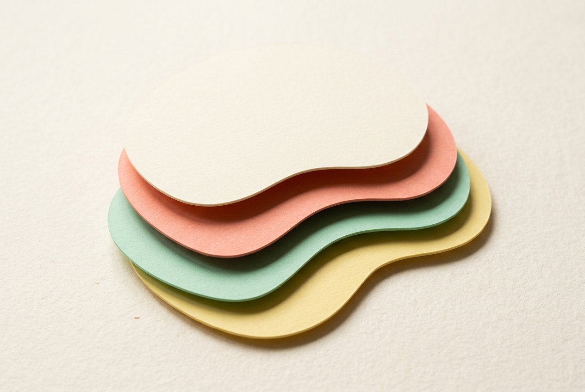

The quiet comeback of paper
Why studios are gluing textures back into interfaces — a field report.
Paper UI / Papercraft
Content is die-cut, stacked and dropped onto the page with soft shadows — the interface behaves like physical cardstock. Warm, tactile, unfailingly friendly without going toy-plastic.

#FBF7EF · page#FF6F61 · primary#7ECFB3 · support#FFD68A · support#9CC7E7 · support#221F1A · textCut it out.
Stack it up.
Fraunces (display) — set it with its optical-size axis up and the SOFT/WONK axes nudge it wonky. Pairs of “scissor letters” (C, T) look die-cut at heavy weights.
Body — Fraunces 500
Headlines that fold, cards that float.
UI / labels — Work Sans
Buttons, tags, chips — 600 weight, uppercase, +0.18em tracking.
.card{
background:#fff;
border:1px solid rgba(34,31,26,.06);
border-radius:22px;
box-shadow:
0 1px 2px rgba(34,31,26,.05), /* paper touch */
0 10px 24px -8px rgba(34,31,26,.16); /* lift */
}
/* hover = pick sheet up */
.card:hover{
transform:translateY(-6px);
box-shadow:0 2px 3px rgba(34,31,26,.05),
0 22px 38px -12px rgba(34,31,26,.22);
}
.pcard{position:relative}
/* the sheet "underneath" */
.pcard::before{
content:""; position:absolute; z-index:-1;
inset:10px -6px -8px 10px;
border-radius:22px;
background:var(--butter);
transform:rotate(1.6deg);
}
/* one light source: every fake
sheet tilts the same way */
.blob{
border-radius:58% 42% 61% 39%
/ 48% 55% 45% 52%;
box-shadow:inset 0 -6px 0 rgba(34,31,26,.08);
}
/* animate radius slowly and it
reads as hand-cut paper,
not a CSS trick */
.btn{
background:#FF6F61; color:#fff;
border-radius:14px;
box-shadow:0 4px 0 #D9564A; /* paper edge */
}
.btn:active{
transform:translateY(3px);
box-shadow:0 1px 0 #D9564A;
}
Why studios are gluing textures back into interfaces — a field report.
Layered, tactile, and printable. Everything you click is a sheet.
12 CSS elevation recipes, copy-paste, no Figma required.
Search these for more: Are.na “papercraft” · Fonts In Use · Godly (site gallery, tag “texture”) · keywords: paper cutout, layered cards, soft shadow elevation, die-cut, cardstock UI.